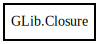

Closure
Object Hierarchy:

Description:
[ CCode ( ref_function = "g_closure_ref" , type_id = "G_TYPE_CLOSURE" , unref_function = "g_closure_unref" ) ]
[ Compact ]
public class Closure
Content:
Creation methods:
Methods:
- public weak Closure @ref ()
- public void add_finalize_notifier (void* notify_data, ClosureNotify notify_func)
- public void add_invalidate_notifier (void* notify_data, ClosureNotify notify_func)
- public void add_marshal_guards (void* pre_marshal_data, ClosureNotify pre_marshal_notify, void* post_marshal_data, ClosureNotify post_marshal_notify)
- public void invalidate ()
- public void invoke (out Value return_value, Value[] param_values, void* invocation_hint)
- public void remove_finalize_notifier (void* notify_data, ClosureNotify notify_func)
- public void remove_invalidate_notifier (void* notify_data, ClosureNotify notify_func)
- public void set_marshal (ClosureMarshal marshal)
- public void set_meta_marshal (void* marshal_data, ClosureMarshal meta_marshal)
- public void sink ()
- public void unref ()
Fields: